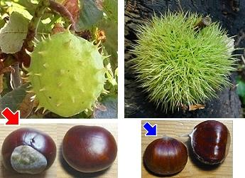
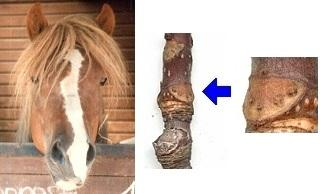

|
| Woher kommt der Name Rosskastanie?
1. Kastanie: Die Rosskastanien sehen den Esskastanien ähnlich.
 |  2. Ross bedeutet Pferd.
- Früher wurden die Rosskastanien als Hustenmedizin an Pferde verfüttert.
- Die Blattnarben an den Zweigen haben die Form von Hufeisen.
Auf Englisch heißt die Rosskastanie Horse Chestnut. |